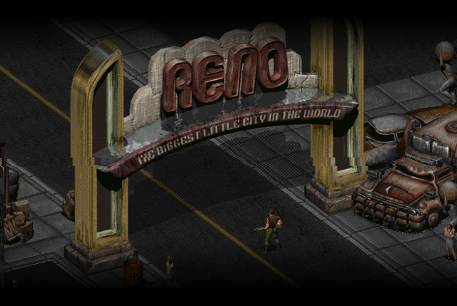

Fallout 2 UA це проєкт української локалізації для гри Fallout 2. На сайті ви можете не тільки скачати тестову локалізацію, а й знайти різноманітні інструменти та корисну інформацію для модингу та редагування Fallout 2.


Переклад триває, але ви вже можете скачати тестовий українізатор на сторінці Локалізації.
А якщо ви бажаєте, то можете зазирнути до нашої спільноти, де ми проводим час та спілкуємось на різні теми.
Якщо ви можете реалізувати гендерне розділення реплік(жіночі та чоловічі), то це буде гарна ідея. Якщо готові, то пишіть нам в наш discord(посилання є у розділі "Зв'язок").
О... ви ще тут? Ну, якщо вам цікавий проєкт, то ви можете доєднатися до перекладу чи розвитку проєкту, написавши в discord(посилання є у розділі "Зв'язок").
Якщо ви хочете підтримати мене, то ви можете це зробити на сторінці "Підтримати" у розділі "FALLOUT 2 UA".
Також зазирніть на "ІНШІ ПРОЄКТИ".